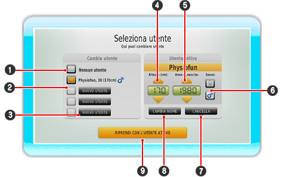

Qui puoi registrare nuovi utenti e scegliere la modalità di gioco tra Divertimento e Fisio, o confrontare online i tuoi risultati nel Test di Equilibrio. Quando avvii le modalità Fisio o Divertimento ti verrà sempre chiesto se vuoi giocare con l'utente attualmente selezionato. Se non è stato selezionato nessun giocatore, dovresti prima registrarti o selezionare un altro giocatore già registrato.

| 1 |
Se non vuoi selezionare un utente, clicca qui.
|
| 2 |
Qui puoi vedere i giocatori già registrati e i loro dati (età, altezza, sesso). Il giocatore attualmente attivo è indicato dal campo arancione.
|
| 3 |
Clicca qui per registrare un nuovo utente.
|
| 4 |
Inserisci l'altezza dell'utente in centimetri. Per farlo utilizza i pulsanti freccia o premi  in su o in giù. Tieni premuto il pulsante per scorrere i numeri più velocemente. in su o in giù. Tieni premuto il pulsante per scorrere i numeri più velocemente.
|
| 5 |
Inserisci qui la data di nascita dell'utente utilizzando i pulsanti freccia. Tieni premuto il pulsante per far scorrere i numeri più velocemente.
|
| 6 |
Con il telecomando Wii punta e scegli il sesso dell'utente, poi premi il pulsante  . In base al sesso selezionato vedrai un uomo o una donna durante gli esercizi. . In base al sesso selezionato vedrai un uomo o una donna durante gli esercizi.
|
| 7 |
Cancella l'utente attivo puntando il telecomando Wii verso il pulsante "Cancella" e premendo il pulsante .
|
| 8 |
Modifica l'utente attivo puntando il telecomando Wii verso il pulsante "Modifica" e premendo il pulsante .
|
| 9 |
Seleziona questo pulsante per selezionare l'utente evidenziato e ritornare alla schermata precedente.
|